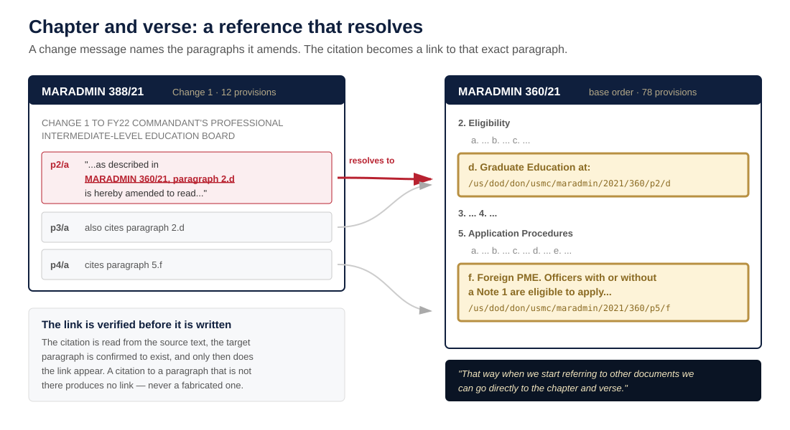

How it works
This library is not a collection of scanned pages. Every individual paragraph of every document is stored as its own addressable unit, which is what lets a reference resolve to the exact paragraph it cites rather than to a whole document.
The requirement
So when you look at references in the USLM or eFRC each paragraph and reference are broken down. No more then one numbered or letter paragraph.Design guidance, Headquarters Marine Corps, July 2026
In the xml it is para 1.a(1) but in printed view it only shows (1). ... The xml will need all the details but visually it won't change.Design guidance, Headquarters Marine Corps, July 2026
Structure
![Side-by-side comparison. On the left, paragraph 8 of MARADMIN 051/23 as printed: numbered and lettered paragraphs indented, each showing only its own local marker such as (b). On the right, the same paragraph as stored data, listing its identifier /us/dod/don/usmc/maradmin/2023/051/p8/a/1/b, its machine citation form 8.a.(1)(b), its printed label (b), its parent p8/a/1 at depth 3, its verification state UNVERIFIED, and its text with the marker removed. The printed view is unchanged; the hierarchy exists only in the data.](visuals/01-paragraph-as-data.svg)
Description of this diagram
Naming
An identifier states where a provision sits in the chain of command and where it sits in its document. The convention follows United States Legislative Markup, the standard used to publish the U.S. Code, carrying the lineage the Department of the Navy XML Naming and Design Rules require of a namespace.
![The identifier /us/dod/don/usmc/maradmin/2023/051/p8/a/1/b divided into three labeled spans. The first span, /us/dod/don/usmc, is command lineage: nation, department, service branch. The second, /maradmin/2023/051, identifies the document exactly as a Marine cites it. The third, /p8/a/1/b, identifies the provision: paragraph 8, subparagraph a, item 1, sub-item b. Four examples show the same rule applied to a Marine Corps message, a Navy instruction rooted at /us/dod/don, a DoD regulation rooted at /us/dod/fmr, and the cancellation-notice series.](visuals/02-identifier-anatomy.svg)
Description of this diagram
Resolution
A citation found in the source text is resolved against the target document's provisions. The link is written only if that paragraph exists. A citation to a paragraph that cannot be found produces no link at all, rather than a link that goes somewhere plausible.

Description of this diagram
Construction and controls
The canonical store is the record. This website, the search index, the machine-readable exports, and the training corpus are all derived from it and are regenerated rather than edited. Four controls apply to every one of them, by construction.
![A left-to-right pipeline: published documents, extraction with provenance, the canonical store holding 17,514 documents and 649,037 provisions, and structural analysis. Four derived outputs fan out below it - the public library, XML exports, the decision engine, and the training corpus - each marked as regenerated rather than edited. Beneath them a band states that every output passes the same four controls: the publication gate excluding seven Distribution Statement C documents, contact masking, verification state, and status labeling of cancelled policy.](visuals/04-pipeline-and-gates.svg)
Description of this diagram
Authoring: the write side
Everything above recovers structure from documents that already exist. Authoring runs the same machinery forward. A drafter composes a directive in SemperScribe, the Marine Corps correspondence tool, and exports it as policy-as-data in one step. Because the document was structured as it was written, it needs no parsing, no reflow, and no citation inference - it validates against the same schema and the same published XSD as the scraped library, and carries the same identifiers.
![The authoring loop. A drafter composes a directive in SemperScribe, which keeps MCO 5215.1K numbering correct as they type. One export menu item produces a policy-as-data file. That file validates against the 0.4.0 schema, exports XSD-valid USLM, and renders a library page with clickable provisions - no parsing or inference, because the document was structured from the first keystroke. The authored directive carries the same identifiers as the scraped library, and the same four controls apply at authoring time: every provision UNVERIFIED until confirmed, contacts masked, publication gate honored, status carried in the data.](visuals/05-authoring-loop.svg)
Description of this diagram
What the structure is for
Structure is not the goal. Addressable provisions make three things possible that prose cannot: a reference that navigates, a stated rule that names the paragraph it came from, and a corpus a model can be trained on without losing track of what is current policy and what was rescinded.
We are setting conditions for the data structure and mass aggregation. ... Lots of what we are doing is about setting conditions for the next tool.Design guidance, Headquarters Marine Corps, July 2026
Standards
- Document structure follows United States Legislative Markup conventions, extended to service issuances.
- Identifier, versioning, and promotion discipline follow the Department of the Navy XML Naming and Design Rules, Version 2.0 (Office of the DON CIO, January 2005) - specifically the base-URN lineage rule, the major-versus-minor version rules, and the requirement that changes pass approval before entering a published copy.
- Exports validate against a published XML schema,
usmc-issuance 2.0, which is a sibling of United States Legislative Markup in its own namespace rather than USLM itself - USLM states that it does not model executive branch documents, and since version 2.1 it does not permit foreign namespaces inside a USLM document. Identifiers exclude the period, which USLM reserves for the file-format suffix, so a directive number is writtenmco/1050_3jin the machine identifier and MCO 1050.3J everywhere a reader sees it. The catalog record follows DCAT-US 3.0, the federal metadata standard required under OMB M-25-05. - Pages target Section 508 and WCAG 2.0 AA; every diagram above carries a text description.
This library is an unofficial reference compiled from public documents. The issuing authority's copy governs.